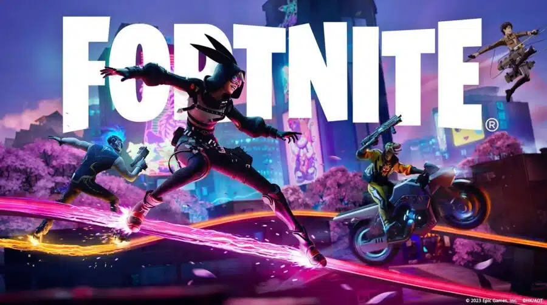

Nova season mal foi lançada e ja tem muitas criticas e poucos elogios
Epic games lançou a segunda temporada do capitulo 4 de fortnite e o jogo esta bem 50/50. Mas como sempre não tem como agradar 100% da comunidade (apenas se voltar com o mapa do capitulo 1). Mas em muitas temporadas a comunidado ou fica divida em muitas pessoas que não gostaram e e poucas que gostaram ou muitas que gostaram e poucas que não, porem nessa temporada foi diferente deixando bem dividido entre quem gostou ou não.
Muitos players estao dizendo que a jogabilidade nao esta muito boa e que preferem a temporada passada (season 1 capitulo 4) e a unica coisa que salva é uma espingarda que dá o famoso "200", que seria uma giria dos jogadores para quando estao usando uma escopeta e ela arma da instakill. O resto esta bem meia boca, a unica coisa que os players pedem é para voltar com a famosa SPAS que é a primeira espingarda a dar 200, e a pump que tambem é uma escopeta porem de raridade mais baixa e da um dano consideravel.
Em questão do mapa nao mudou muito, porém chegou uma área nova e os players estão dizendo que é muito boa pois lembra torres tortas da season 9 (capitulo 1), e isso traz boas lembranças de como o jogo era antigamente. Porém muitos reclamam que o mapa poderia ter mudado um pouco mais. E no passe de batalha foi adicionado uma skin do Eren Jaeger que é um personagem de um anime chamado Attack On Titan e esta sendo muito elogiado por muito dos jogadores, apesar que não são todos que conhecem.